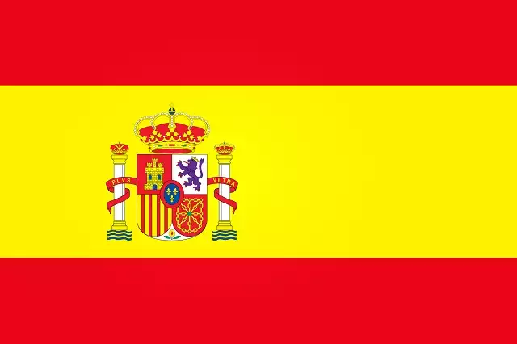

Ricky Martín nació en San Juan, Puerto Rico, en 24 de dezembro de 1971. Es hijo de Nereida Morales,
contadora, y Enrique Martín
Negroni, psicólogo. El cantante creció en un
hogar católico romano y fue monaguillo durante su infancia. Comenzó a cantar a los seis años,
utilizando cucharas de cocina de madera como micrófonos; a menudo interpretaba canciones de Menudo y
también cantaba canciones de bandas de rock inglesas como Led Zeppelin, Journey y REO Speedwagon. El
lado de su familia materna tenía inclinaciones musicales y su abuelo materno era poeta, lo que
inspiró al joven Martin a escribir canciones. Martin luego reflexionó sobre el tiempo que pasó con
la familia cuando era niño: "Cada vez que me encuentro frente a una audiencia, ya sean veinte
personas o cien mil, una vez más siento la energía que me consumía en las reuniones familiares de mi
juventud.” Después de descubrir un anuncio en el periódico con su padre sobre audiciones para
comerciales, Martin, de nueve años, comenzó a aparecer en comerciales de televisión puertorriqueños
de productos como refrescos, pasta de dientes y restaurantes de comida rápida. En un año y medio
protagonizó once comerciales. Hoy es un cantante, compositor, actor puertorriqueño, y Embajador de
Buena Voluntad de UNICEF. Fue uno de los ídolos adolescentes más grandes de América Latina durante
los años 90 y una figura importante en la música pop estadounidense a finales de la década. Ricky se hizo conocido mundialmente por ser el cantante principal de la banda Menudo, donde se hizo mundialmente famoso a los 12 años por su actuación. Con su carrera en solitario años después, Ricky Martin llamó la atención del público estadounidense
por primera vez con su trabajo como actor, incluido el papel de Marius en el musical de Broadway Los
Miserables y la telenovela General Hospital. El pistoletazo de salida de su carrera en solitario.
Pero su verdadero éxito comenzó cuando su canción "La Copa de la vida" fue el tema principal de la
Copa del Mundo de 1998 en Francia y encabezó las listas musicales en más de 30 países.

España
Primeros 5 álbumes:
• Yo Amarás – 1993
• Un Medio Vivir – 1995
• Vuelve – 1998
• La colección de videos de Ricky Martin – 1999
• Ricky Martín – 1999
• Yo Amarás – 1993
• Un Medio Vivir – 1995
• Vuelve – 1998
• La colección de videos de Ricky Martin – 1999
• Ricky Martín – 1999
Incluso lanzó dos álbumes en el año 1999 y dos en el año 2015.
Su lanzamiento más reciente es el álbum Play siendo su undécimo EP, tiene 6
canciones y dura 17 minutos
Las canciones más famosas del artista:
• 01.Maria
• 02.Livin' La Vida Loca (spanish)
• 03.Livin' La Vida Loca
• 04.La Copa de La Vida (Spanish)
• 05.Vente Pa' Ca (Feat. Maluma)
• 06.Te Extraño, Te Olvido, Te Amo
• 07.The Best Thing About Me Is You
• 08.Tu Recuerdo
• 09.The Cup Of Life
• 10.Tal Vez
• 01.Maria
• 02.Livin' La Vida Loca (spanish)
• 03.Livin' La Vida Loca
• 04.La Copa de La Vida (Spanish)
• 05.Vente Pa' Ca (Feat. Maluma)
• 06.Te Extraño, Te Olvido, Te Amo
• 07.The Best Thing About Me Is You
• 08.Tu Recuerdo
• 09.The Cup Of Life
• 10.Tal Vez
Livin' La Vida Loca
En 1999 lanzó su disco más exitoso, con el hit "Livin' la Vida Loca". Ese fue un éxito mundial, y su gira incluyó Asia, Europa, Estados Unidos y América Latina.